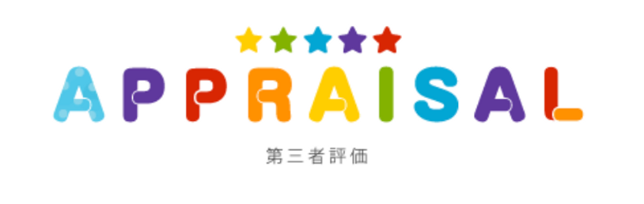
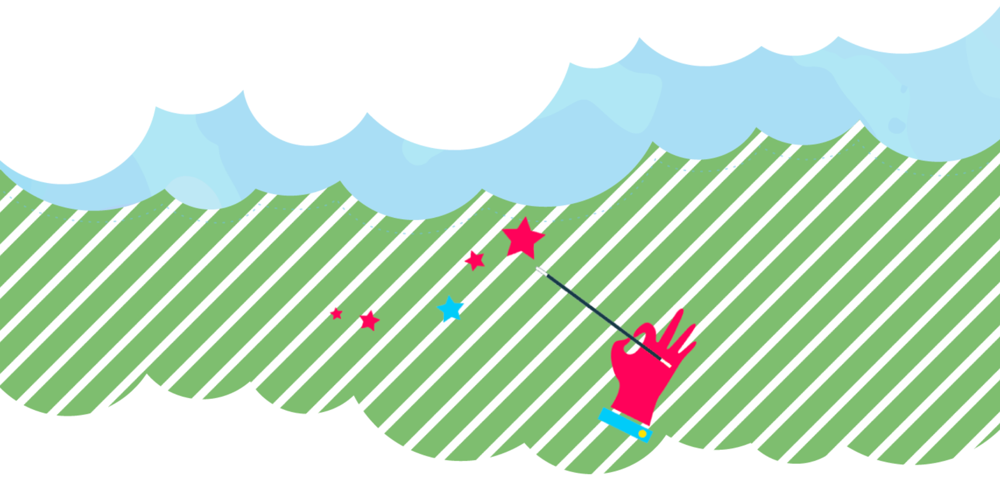
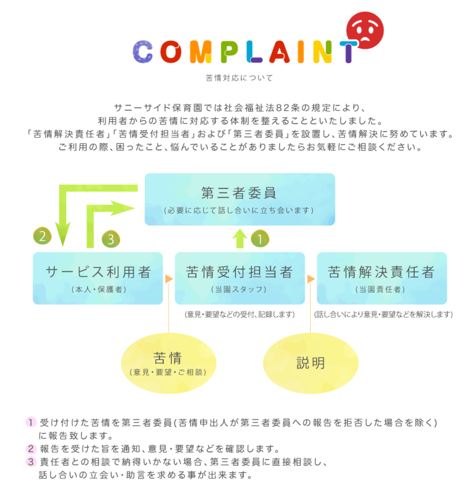

application申請書・重要事項説明書一覧


当園福祉サービスの相談・苦情の第三者委員会を設置しております。

-
苦情対応体制の概要
- 苦情受付担当者：主任保育士
- 苦情解決責任：園長
- 第三者委員：
苦情対応の目的
- (1)苦情、要望などへの適切な対応により利用者の理解と満足度を高めることを目的とします。
- (2)利用者個人の権利を擁護するとともに、利用者が保育サービスを適切に利用することができるよう支援することを目的とします。
- (3)納得がいかないことについては、一定のルールに沿った方法で円滑・円満な解決に努めることを目的とします。
苦情対応の方法
- (1)苦情の受付
- 苦情は直接、電話、Eメール、書面などにより苦情受付担当者が随時受け付けます。尚、第三者委員に直接苦情を申し出ることもできます。保育園の玄関に設置しております御意見箱への投書でも結構です。
- (2)苦情受付の報告・確認
- 苦情受付担当者が受け付けた苦情を苦情解決責任者と第三者委員(苦情申出人が第三者委員への報告を拒否した場合を除く)に報告致します。第三者委員は内容を確認し、苦情申出人に対して、報告を受けた旨を通知します。
- (3)苦情対応のための話し合い
- 苦情解決責任者は、苦情申出人と誠意をもって話し合い、解決に努めます。その際、苦情申出人は第三者委員の助言、立会いを求めることができます。尚、第三者委員の立会いによる話し合いは次により行います。
- ア. 第三者委員による苦情内容の確認
- イ.第三者委員による解決案の調整、助言
- ウ.話し合いの結果や改善事項などの確認
- (4)苦情対応の報告
- 個人情報に関するものや申し込み者が拒否した場合を除いて、苦情等の解決について公表し、園の改善に努めます。